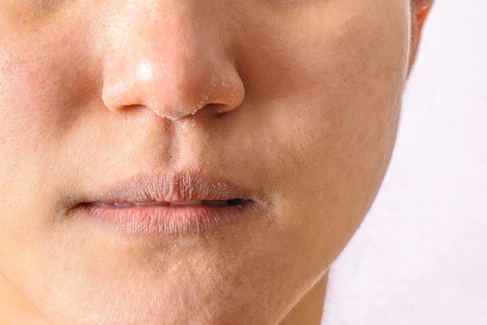
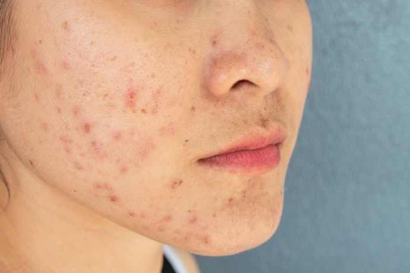

CLEANSING
Aktivitas sehari-hari, terutama di luar ruangan, membuat wajah terpapar debu, polusi, dan keringat. Hal tersebut tentu berisiko menimbulkan jerawat dan kekusaman, terlebih bila Anda terbiasa menggunakan makeup dalam menjalankan aktivitas harian. Jadi, membersihkan wajah setelah beraktivitas sangatlah penting.
Salah satu metode membersihkan wajah yang disarankan oleh pakar kecantikan adalah double cleansing. Double cleansing dilakukan dengan cara membersihkan wajah menggunakan dua tipe pembersih agar hasilnya maksimal
 Tahap pertama biasanya tidak menggunakan air, lalu tahap kedua baru dibilas dengan air. Double cleansing tidak hanya ditujukan untuk wanita saja. Para pria juga dapat melakukannya.
Kulit pria cenderung memiliki pori-pori yang lebih besar. Produksi minyak dan sebumnya pun lebih tinggi. Produksi minyak berlebih dapat menimbulkan jerawat dan membuat kulit terlihat kusam. Selanjutnya, jerawat dapat menimbulkan penyumbatan pori-pori.
Karena itu, pria juga memerlukan double cleansing agar wajah bersih maksimal. Sebagai informasi, kini sudah banyak produk skincare yang bisa digunakan oleh semua gender dari berbagai rentang usia.
Tahap pertama biasanya tidak menggunakan air, lalu tahap kedua baru dibilas dengan air. Double cleansing tidak hanya ditujukan untuk wanita saja. Para pria juga dapat melakukannya.
Kulit pria cenderung memiliki pori-pori yang lebih besar. Produksi minyak dan sebumnya pun lebih tinggi. Produksi minyak berlebih dapat menimbulkan jerawat dan membuat kulit terlihat kusam. Selanjutnya, jerawat dapat menimbulkan penyumbatan pori-pori.
Karena itu, pria juga memerlukan double cleansing agar wajah bersih maksimal. Sebagai informasi, kini sudah banyak produk skincare yang bisa digunakan oleh semua gender dari berbagai rentang usia.
Second cleanser untuk membersihkan kulit secara tuntas
Setelah membersihkan wajah menggunakan first cleanser, Anda dapat melanjutkannya dengan tahap kedua. Tahap kedua ini ditujukan untuk memaksimalkan terangkatnya kotoran dan sisa produk first cleanser di wajah. Pada tahap ini, produk yang digunakan umumnya berupa sabun cuci muka.
 Sabun cuci muka hadir dalam bentuk yang sangat beragam, mulai dari gel hingga sabun batang. Agar kulit wajah tidak terasa kering, sebaiknya Anda memilih sabun cuci muka atau facial wash yang lembut dan melembapkan. Selain itu, pastikan Anda membilasnya hingga bersih, lalu keringkan wajah sebelum lanjut ke tahapan skincare berikutnya.
Sabun cuci muka hadir dalam bentuk yang sangat beragam, mulai dari gel hingga sabun batang. Agar kulit wajah tidak terasa kering, sebaiknya Anda memilih sabun cuci muka atau facial wash yang lembut dan melembapkan. Selain itu, pastikan Anda membilasnya hingga bersih, lalu keringkan wajah sebelum lanjut ke tahapan skincare berikutnya.
Kulit kering, pilih produk yang melembapkan
Kulit kering biasanya ditandai dengan kurangnya kadar kelembapan di wajah. Kurangnya kadar kelembapan ini menyebabkan kulit tampak pucat, terasa kasar, mudah memerah, dan kurang elastis. Jika kulit Anda termasuk kering, Anda perlu menjaga pola makan dan memperbanyak minum air. Hal penting lainnya untuk dilakukan adalah memilih skincare dengan klaim melembapkan dan menghidrasi.

Kandungan dalam skincare yang patut dipertimbangkan antara lain glycerin, asam laktat, petrolatum, ceramide, hyaluronic acid, squalane, dan lidah buaya. Selain itu, penting bagi Anda untuk memilih skincare yang tidak membuat kulit terasa tertarik setelah menggunakannya.
Kulit berminyak dan rentan berjerawat, pilih produk dengan oil control
Sejumlah orang memiliki kulit yang memproduksi kadar minyak berlebih sehingga pori-pori wajah terlihat besar. Wajah pun jadi tampak mengilap, licin, dan kusam,
Produksi minyak atau sebum berlebih dapat menimbulkan komedo dan menyumbat pori-pori sehingga menimbulkan jerawat. Karena itu, Anda sebaiknya memilih produk yang dapat membersihkan secara menyeluruh, juga mengontrol produksi minyak di wajah.

Kandungan dalam skincare yang patut dipertimbangkan antara lain glycerin, asam laktat, petrolatum, ceramide, hyaluronic acid, squalane, dan lidah buaya. Selain itu, penting bagi Anda untuk memilih skincare yang tidak membuat kulit terasa tertarik setelah menggunakannya.
Nah, Anda dapat mempertimbangkan penggunaan pembersih wajah bertekstur gel atau krim. Dengan begitu, wajah akan terasa lebih lembap dan kenyal, bahkan setelah menggunakannya.
Kandungan yang sebaiknya terdapat pada skincare Anda di antaranya salicylic acid, clay, tea tree oil, niacinamide, sulfur, dan witch hazel. Agar tidak makin berminyak, hindarilah produk dengan kandungan minyak kelapa, cocoa butter, serta bahan yang bersifat komedogenik.
KEMBALI MEMBACA TIPS LAIN